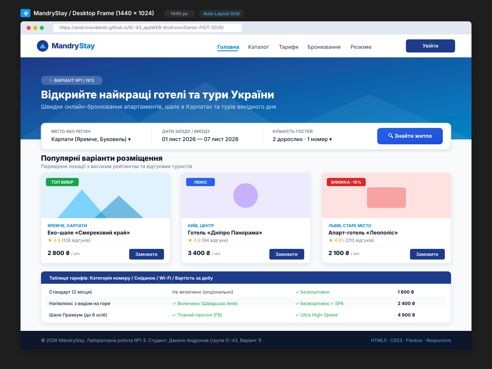
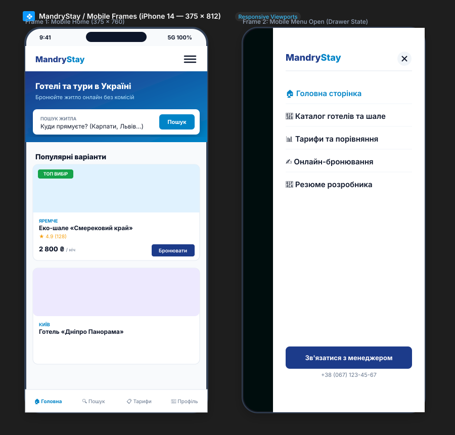
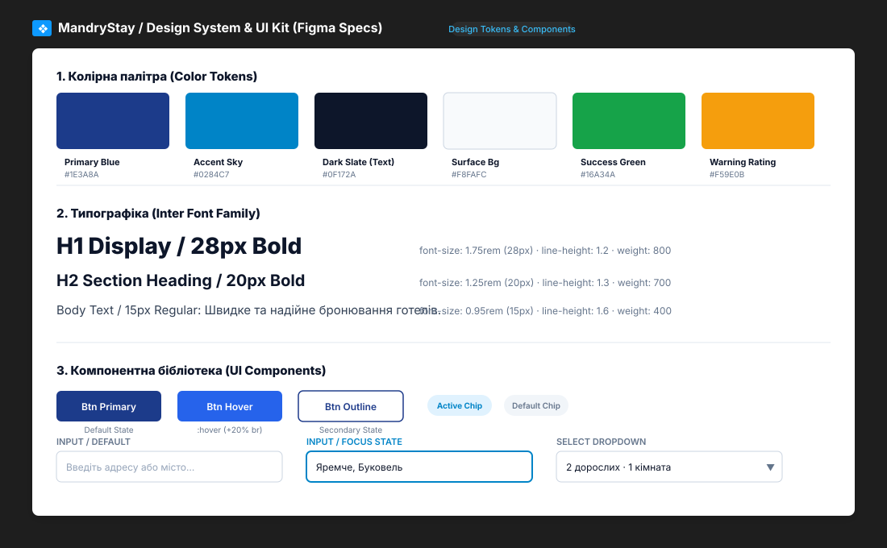
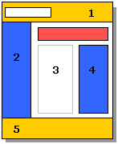
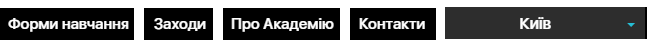
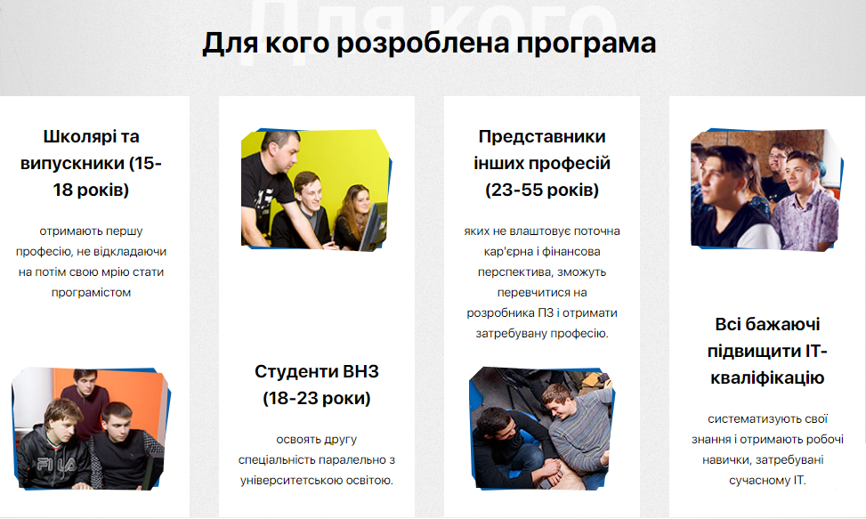
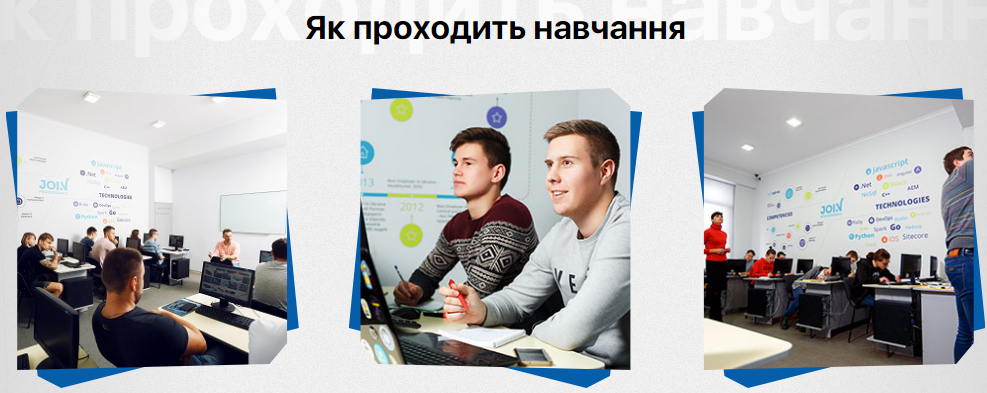
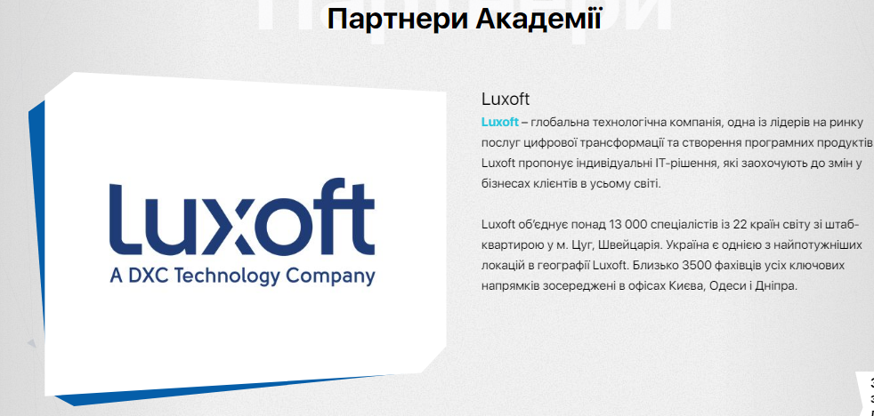

Школярі та випускники (15-18 років)
отримають першу професію, не відкладаючи на потім свою мрію стати програмістом

Тема: ТЕГИ ТА АТРИБУТИ HTML-ДОКУМЕНТА. СТРУКТУРНА РОЗМІТКА. GIT. GITHUB. РОБОТА З РЕПОЗИТОРІЯМИ. ОПИС ЛОГІКИ ВЛАСНОГО WEB-ЗАСТОСУНКУ.
Мета: Придбати практичні навички роботи з Git, GitHub, репозиторіями, структурою HTML-документа, таблицями, зображеннями, посиланнями, списками, формами. Створити шаблон звітного HTML-документа для відображення результатів виконання всіх лабораторних робіт.
Обрана предметна галузь: Онлайн-сервіс бронювання готелів, курортних комплексів та туристичних турів («MandryStay»).
Веб-застосунок «MandryStay» призначений для користувачів, які планують індивідуальні та сімейні подорожі Україною та зарубіжжям. Платформа забезпечує централізований пошук доступного житла, порівняння параметрів номерів у зручній табличній формі та швидке бронювання з вибором додаткових опцій (харчування, трансфер, SPA).
Вимога методички (ЛР №1, п. 14, 31): «Створити макет власного WEB-застосунку у Figma на свій розсуд. Показати викладачу при захисті цієї лабораторної роботи. У файлі index.html написати HTML-код головної сторінки майбутнього WEB-застосунку за макетом, створеного у Figma.»
Проєкт у Figma: MandryStay — UI/UX Web Booking Platform (IC-43 Andronov Danilo)
Сітка та розмірності: Desktop 1440×1080 (12-колонкова адаптивна сітка, відступи між колонками 24px) та Mobile iPhone 14 375×812 (одноколонкова модульна сітка, відступи 16px).
На макеті спроєктовано повну компонувальну структуру сайту: фіксована навігаційна шапка з логотипом, Hero-банер із промо-блоком та плаваючим віджетом швидкого пошуку житла, триколонковий каталог популярних номерів/шале, порівняльна тарифна таблиця (зебра-стиль) та підвал.

Рис. 1.1 — Робочий фрейм десктопного макета сайту «MandryStay» у Figma (1440px)
Мобільний фрейм демонструє трансформацію компонентів під екрани смартфонів: адаптивний згорнутий заголовок із бургер-іконкою, вертикальне стекування карток готелів, спрощений пошуковий віджет та інтерактивне висувне бургер-меню (Navigation Drawer) у відкритому стані.

Рис. 1.2 — Мобільні фрейми у Figma: стандартний вигляд та активний стан відкритого меню (Drawer)
Специфікація компонентів та стилів, що використовувались при верстці сайту:
#1E3A8A — основний брендовий колір), Accent Sky (#0284C7 — акцентні елементи, посилання, активні стани), Dark Slate (#0F172A — контрастний текст заголовків), Surface Light (#F8FAFC — фон сторінки та карток), Success Green (#16A34A — бейджі та статус доступності).Inter (Google Fonts) з чіткою ієрархією: H1 (28px Bold), H2 (20px Bold), Body Text (15px Regular), Captions / Badges (11px SemiBold).
Рис. 1.3 — Дизайн-система компонентів, палітра кольорів та типографіка у Figma
| Компонент макета Figma | Реалізований тег HTML5 | CSS-властивості та поведінка |
|---|---|---|
| Header / Navigation Frame | <header> + <nav> |
Flexbox навігація, фіксований відступ, перетворення в бургер на екранах ≤ 767px |
| Hero Banner + Search Bar | <section id="hero"> + <form> |
Лінійний градієнт, плаваючий пошуковий контейнер із тінями box-shadow |
| Hotel Catalog (3 Columns) | <section> + <article> |
Flexbox сітка (3 колонки > 1024px, 2 колонки на планшеті, 1 колонка на мобільному) |
| Pricing Comparison Table | <table> (thead, tbody, tfoot) |
Зебра-заливка :nth-child(even), горизонтальна прокрутка на мобільних пристроях |
| Interactive Booking Form | <form id="booking-form"> |
Валідація полів, акцентні кольори при фокусі :focus, доступні лейбли |
| Footer Information Bar | <footer> + <address> |
Темний контрастний фон (#0F172A), контактні дані автора та копірайт |
Нижче наведено семантичну структуру документа index.html веб-застосунку «MandryStay»:
<!DOCTYPE html>
<html lang="uk">
<head>
<meta charset="UTF-8">
<meta name="viewport" content="width=device-width, initial-scale=1.0">
<title>MandryStay — Сервіс бронювання відпочинку</title>
</head>
<body>
<header>
<div id="top-branding">...</div>
<nav>
<ul>
<li><a href="#about">Про сервіс</a></li>
<li><a href="#booking-form">Пошук та бронювання</a></li>
<li><a href="#rooms-catalog">Каталог номерів</a></li>
<li><a href="#pricing-table">Тарифна сітка</a></li>
<li><a href="#advantages">Переваги</a></li>
<li><a href="description.html">Опис логіки</a></li>
</ul>
</nav>
</header>
<main>
<section id="about">...</section>
<section id="booking-form">...</section>
<section id="rooms-catalog">...</section>
<section id="pricing-table">...</section>
<section id="advantages">...</section>
</main>
<footer>
<address>...</address>
<p>© 2026 MandryStay</p>
</footer>
</body>
</html>
| Категорія номера | Площа (м²) | Місткість | Включені послуги | Ціна за добу | ||
|---|---|---|---|---|---|---|
| Wi-Fi | Сніданок | SPA | ||||
| Standard Single | 18 | 1 особа | Так | Ні | Ні | 1 450 грн |
| Deluxe Panorama Suite | 45 | 2+1 дитина | Так | Включено | Включено | 4 100 грн |
| Alpine Chalet з каміном | 90 | до 6 осіб | Так | Включено | Безліміт | 8 900 грн |
| Середня ціна: | 4 816 грн | |||||
<table border="1" cellpadding="8" cellspacing="0">
<caption><strong>Таблиця 1.1 — Порівняльна характеристика категорій номерів</strong></caption>
<thead>
<tr>
<th scope="col" rowspan="2">Категорія номера</th>
<th scope="col" rowspan="2">Площа (м²)</th>
<th scope="col" rowspan="2">Місткість</th>
<th scope="col" colspan="3">Включені послуги</th>
<th scope="col" rowspan="2">Ціна за добу (UAH)</th>
</tr>
<tr>
<th scope="col">Wi-Fi</th>
<th scope="col">Сніданок</th>
<th scope="col">SPA-зона</th>
</tr>
</thead>
<tbody>
<tr>
<th scope="row">Standard Single</th>
<td align="center">18</td>
<td align="center">1 особа</td>
<td align="center">✔ Так</td>
<td align="center">✖ Ні</td>
<td align="center">✖ Ні</td>
<td align="right"><strong>1 450 грн</strong></td>
</tr>
...
</tbody>
<tfoot>
<tr>
<td colspan="6" align="right"><strong>Середня вартість:</strong></td>
<td align="right"><strong>4 450 грн</strong></td>
</tr>
</tfoot>
</table>
<table> — кореневий контейнер таблиці.<caption> — заголовок та підпис таблиці, що відображається безпосередньо над нею.<thead>, <tbody>, <tfoot> — структурні секції таблиці для логічного відокремлення шапки, основного вмісту та підсумкового рядка.<tr> (table row) — рядок таблиці.<th> (table header) — комірка заголовка (текст за замовчуванням жирний і вирівняний по центру). Атрибут scope="col|row" покращує доступність для скрінрідерів.<td> (table data) — стандартна комірка даних.colspan="n" — об'єднує n стовпців по горизонталі.rowspan="n" — об'єднує n рядків по вертикалі.<form action="#" method="post">
<fieldset>
<legend><strong>1. Параметри вашої подорожі</strong></legend>
<label for="dest-city">Місто:</label>
<input type="text" id="dest-city" name="destination" required>
<label for="check-in-date">Дата заїзду:</label>
<input type="date" id="check-in-date" name="check_in" required>
<select id="room-category-select" name="room_category" required>
<optgroup label="Стандартні номери">
<option value="std-twin">Standard Twin/Double</option>
</optgroup>
</select>
</fieldset>
<fieldset>
<legend><strong>2. Опції та оплата</strong></legend>
<input type="checkbox" id="opt-breakfast" name="services" value="breakfast">
<input type="radio" id="pay-card" name="payment_method" value="card" checked>
<textarea id="special-requests" name="comments" rows="4" cols="50"></textarea>
</fieldset>
<button type="submit">Забронювати номер зараз</button>
</form>
<form> — контейнер форми. Основні атрибути: action (URL обробника) та method (HTTP-метод GET або POST).<fieldset> та <legend> — логічне групування пов'язаних полів введення із рамкою та підписом.<label> — текстова мітка елемента форми. Пов'язується через атрибут for="id_елемента", що забезпечує активацію поля при кліку на текст мітки.<input> — універсальне поле введення. Тип задається атрибутом type: text, date, number, email, tel, radio, checkbox, password тощо.<select> та <option> — випадний список вибору. Може групуватися через <optgroup>.<textarea> — багаторядкове текстове поле (атрибути rows та cols).<button type="submit|reset|button"> — кнопка керування формою.<!-- Маркований -->
<ul>
<li>Миттєве підтвердження броні</li>
<li>Гарантія найкращої ціни</li>
</ul>
<!-- Нумерований -->
<ol>
<li>Вибір дат та міста</li>
<li>Підтвердження замовлення</li>
</ol>
<!-- Список визначень -->
<dl>
<dt><strong>Check-in</strong></dt>
<dd>Процедура реєстрації гостя на рецепції.</dd>
</dl>
<ul> (unordered list) — невпорядкований (маркований) список. Маркери за замовчуванням — крапки (disc, circle, square).<ol> (ordered list) — впорядкований (нумерований) список. Підтримує атрибути: type="1|a|A|i|I", start="n" (початковий номер) та reversed (зворотна нумерація).<li> (list item) — елемент списку як у <ul>, так і в <ol>.<dl> (description list) — список описів/визначень. Містить пари тегів <dt> (термін / назва) та <dd> (опис / значення терміна).<figure>
<img src="images/hero-carpathians.svg"
alt="Панорама гірського курорту MandryStay у Карпатах"
width="800"
height="400"
title="Краєвид Карпатського резорту">
<figcaption>Курортний комплекс «MandryStay Bukovel Resort & SPA»</figcaption>
</figure>
<img> — одинарний тег для вбудовування графічних ресурсів у веб-документ.src (source) — обов'язковий атрибут, що містить відносний або абсолютний URL файлу зображення.alt (alternative text) — обов'язковий атрибут доступності, що описує зміст картинки при повільному з'єднанні та для незрячих користувачів (скрінрідерів).width та height — геометричні розміри зображення в пікселях, резервують місце в макеті до завантаження файлу і запобігають стрибкам контенту (CLS).title — спливаюча текстова підказка при наведенні курсора миші.<figure> та <figcaption> — семантичні теги стандарту HTML5 для групування медіафайлів із підписом.Нижче представлено живий інтерактивний перегляд головної сторінки розробленого сайту index.html через вбудований фрейм, а також прямі посилання на GitHub та хостинг GitHub Pages.
🔗 Жива сторінка (GitHub Pages): Відкрити MandryStay у новому вікні ↗
📁 Репозиторій коду (GitHub): github.com/AndronovDanilo/IC-43_appWEB-AndronovDanilo-FIOT-2026 ↗
Під час виконання лабораторної роботи №1 було здобуто глибокі практичні навички роботи з сучасними стандартами веброзробки:
IC-43_appWEB-AndronovDanilo-FIOT-2026 та IC-43_appRECORD-AndronovDanilo-FIOT-2026), освоєно процес комітів та публікації сторінок на безкоштовному хостингу GitHub Pages.Тема: КАСКАДНІ ТАБЛИЦІ СТИЛІВ. СЕЛЕКТОРИ ТЕГУ, КЛАСУ, ІДЕНТИФІКАТОРА. СТИЛЬОВЕ ОФОРМЛЕННЯ ТЕКСТОВИХ ЕЛЕМЕНТІВ В HTML-ДОКУМЕНТАХ.
Мета: Придбати практичні навички роботи з селекторами, ідентифікаторами, списками, різноманітними властивостями кольору і фону, зовнішніми та внутрішніми відступами, плаваючими елементами, оформленням текстових елементів. Зробити стильове оформлення резюме згідно з макетом.
Відповідно до специфікації W3C та навчальної програми, існує 3 основні способи підключення каскадних таблиць стилів CSS до HTML-документа:
Підключення окремого файлу з розширенням .css через тег <link> всередині секції <head>. Забезпечує повне розділення контенту та оформлення, кешування браузером та повторне використання на багатьох сторінках сайту «MandryStay»:
<head>
<link rel="stylesheet" href="css/style.css">
<link rel="stylesheet" href="css/resume.css">
</head>
Розміщення CSS-правил всередині тегу <style> безпосередньо в <head> HTML-сторінки. Застосовується для специфічних стилів однієї конкретної сторінки або критичного CSS (Critical Path CSS):
<head>
<style>
.hero-banner {
background: linear-gradient(135deg, #1e3a8a, #0284c7);
color: #ffffff;
}
</style>
</head>
Запис CSS-властивостей безпосередньо в атрибут style="..." конкретного HTML-елемента. Має найвищий пріоритет специфічності (1000 пунктів), але ускладнює підтримку і не рекомендується для загальної верстки:
<p style="color: #0284c7; font-weight: bold; margin-top: 10px;">
Швидке онлайн-бронювання житла
</p>
Селектори тегу застосовують правила оформлення до всіх зазначених HTML-елементів на сторінці безпосередньо за іменем їхнього тегу.
/* Стилізація заголовків першого та другого рівнів */
h1 {
font-size: 2.2rem;
font-weight: 800;
color: #0f172a;
letter-spacing: -0.5px;
margin-bottom: 15px;
}
h2 {
font-size: 1.7rem;
font-weight: 700;
color: #1e3a8a;
border-bottom: 2px solid #e2e8f0;
padding-bottom: 8px;
margin-top: 40px;
margin-bottom: 18px;
}
/* Стилізація абзаців тексту */
p {
font-size: 16px;
line-height: 1.65;
color: #334155;
margin-bottom: 14px;
}
/* Стилізація таблиці та заголовків комірок */
table {
width: 100%;
border-collapse: collapse;
background-color: #ffffff;
box-shadow: 0 4px 6px -1px rgba(0, 0, 0, 0.05);
}
th {
background-color: #1e293b;
color: #ffffff;
padding: 12px 14px;
text-align: left;
}
<h1>Відкрийте для себе найкращий відпочинок разом із MandryStay</h1> <h2>Онлайн-бронювання номерів</h2> <p>Плануєте відпустку в Карпатах чи бізнес-поїздку до Львова?...</p>
Звичайний абзац <p>, стилізований кольором #334155 та збалансованим інтерліньяжем.
Селектори класу позначаються крапкою (.classname) та дозволяють багаторазово застосовувати спільні правила стилізації до обраних елементів на сторінці.
/* Стилізація головної кнопки бронювання */
.btn-primary-action {
display: inline-block;
background: linear-gradient(135deg, #0284c7 0%, #0369a1 100%);
color: #ffffff;
padding: 12px 24px;
border: none;
border-radius: 8px;
font-size: 15px;
font-weight: 700;
cursor: pointer;
box-shadow: 0 4px 6px rgba(2, 132, 199, 0.25);
transition: all 0.2s ease;
}
.btn-primary-action:hover {
background: linear-gradient(135deg, #0369a1 0%, #075985 100%);
box-shadow: 0 6px 12px rgba(2, 132, 199, 0.35);
}
/* Стилізація другорядної кнопки очищення */
.btn-reset-action {
background-color: #f1f5f9;
color: #475569;
padding: 12px 20px;
border: 1px solid #cbd5e1;
border-radius: 8px;
font-size: 15px;
font-weight: 600;
cursor: pointer;
transition: all 0.2s ease;
}
/* Стилізація карток каталогу номерів */
.room-card-article {
background-color: #ffffff;
border: 1px solid #e2e8f0;
border-radius: 12px;
padding: 20px;
box-shadow: 0 4px 6px -1px rgba(0, 0, 0, 0.05);
transition: transform 0.2s ease, box-shadow 0.2s ease;
}
.room-card-article:hover {
transform: translateY(-3px);
box-shadow: 0 10px 15px -3px rgba(0, 0, 0, 0.1);
}
<article class="room-card-article">
<h3>1. Номер категорії «Стандарт»</h3>
<img src="images/room-standard.svg" alt="Стандарт">
</article>
<button type="submit" class="btn-primary-action">Забронювати номер зараз</button>
<button type="reset" class="btn-reset-action">Очистити форму</button>
Селектори ідентифікатора позначаються знаком решітки (#idname) та застосовуються до єдиного унікального елемента документа з найвищим пріоритетом специфічності.
/* Верхній блок логотипу та гасла */
#top-branding {
display: flex;
align-items: center;
justify-content: space-between;
flex-wrap: wrap;
gap: 15px;
}
/* Форма онлайн-бронювання */
#booking-form {
background-color: #ffffff;
border: 1px solid #cbd5e1;
border-radius: 12px;
padding: 30px;
box-shadow: 0 10px 15px -3px rgba(0, 0, 0, 0.05);
}
/* Блок переваг платформи */
#advantages {
background-color: #ffffff;
border: 1px solid #e2e8f0;
border-radius: 12px;
padding: 30px;
margin-top: 40px;
}
<div id="top-branding">
<img src="images/logo.svg" alt="Логотип">
<p><em>Сервіс швидкого та безпечного бронювання житла...</em></p>
</div>
<section id="booking-form">
<h2>Онлайн-бронювання номерів</h2>
...
</section>
Унікальна секція з тінню, заокругленням кутів 12px та білим фоном.
У проєкті використано повний спектр розширених селекторів та комбінаторів CSS3:
/* 1. Універсальний селектор (скидання відступів та box-sizing) */
* {
box-sizing: border-box;
margin: 0;
padding: 0;
}
/* 2. Дочірній селектор (Child Combinator >) */
nav > ul {
border-top: 1px solid rgba(255, 255, 255, 0.2);
padding-top: 12px;
}
fieldset > p {
margin-bottom: 12px;
}
/* 3. Сусідній селектор (Adjacent Sibling Combinator +) */
h2 + p {
font-size: 1.05rem;
color: #475569;
margin-bottom: 20px;
}
label + input {
margin-top: 4px;
}
/* 4. Селектори атрибутів (Attribute Selectors) */
input[type="text"],
input[type="email"],
input[type="tel"],
input[type="date"],
input[type="number"] {
width: 100%;
max-width: 500px;
padding: 10px 14px;
border: 1.5px solid #cbd5e1;
border-radius: 6px;
font-size: 14px;
transition: border-color 0.2s ease, box-shadow 0.2s ease;
}
/* Псевдоклас фокусу для селекторів атрибута */
input[type="text"]:focus,
input[type="email"]:focus {
outline: none;
border-color: #0284c7;
box-shadow: 0 0 0 3px rgba(2, 132, 199, 0.2);
}
* — вибирає абсолютно всі елементи дерева DOM, застосовує глобальне правило box-sizing: border-box.A > B — вибирає лише ті елементи B, які є прямими нащадками (дітьми першого рівня) елемента A.A + B — вибирає елемент B, що розташований безпосередньо після елемента A на тому ж рівні ієрархії.input[type="..."] — точково стилізує поля вводу конкретного типу, не зачіпаючи чекбокси чи радіокнопки.Застосовано надійний стек системних шрифтів із високою швидкістю рендерингу (Zero CLS):
font-family: system-ui, -apple-system, BlinkMacSystemFont, "Segoe UI", Roboto, "Helvetica Neue", Arial, sans-serif; font-size: 16px; line-height: 1.65; letter-spacing: -0.5px; /* для h1 */
linear-gradient(135deg, #0f172a 0%, #1e3a8a 50%, #0284c7 100%);border: 1.5px solid #cbd5e1; border-radius: 8px / 12px / 16px;box-shadow: 0 10px 25px -5px rgba(2, 132, 199, 0.2)./* Сучасна таблиця: об'єднані межі, темна шапка, смугаста зебра та hover */
table {
border-collapse: collapse;
}
tbody tr:nth-child(even) {
background-color: #f8fafc; /* парні рядки */
}
tbody tr:hover {
background-color: #e0f2fe; /* підсвічування рядка при наведенні */
transition: background-color 0.2s ease-in-out;
}
:hover (наведення курсора), :focus (фокус введення), :active (клік по кнопці);transition: all 0.2s ease для плавної зміни фону, кольору рамки та розміру тіні;transform: translateY(-3px) для візуального ефекту підняття карток при наведенні миші.
Розроблено окрему сторінку resume.html зі стилями css/resume.css, що представляє професійне резюме студента Андронова Данила за двоколонковою схемою.
🔗 Живе посилання на резюме: Відкрити резюме у новому вікні
.resume-wrapper {
max-width: 900px;
margin: 0 auto;
background: #ffffff;
border-radius: 16px;
box-shadow: 0 10px 25px -5px rgba(0, 0, 0, 0.1);
display: flex;
flex-wrap: wrap;
}
.resume-sidebar {
width: 35%;
background: linear-gradient(180deg, #0f172a 0%, #1e293b 100%);
color: #f8fafc;
padding: 35px 25px;
}
.resume-main {
width: 65%;
padding: 35px 35px;
}
.skill-tag.highlight {
background-color: #0284c7;
}
Під час виконання лабораторної роботи №2 було успішно опановано каскадні таблиці стилів (CSS3):
*, дочірні >, сусідні + та селектори атрибутів input[type="..."]). З'ясовано механізм специфічності (ваги) селекторів (inline > ID > Class > Tag).line-height: 1.65.nth-child(even)) та динамічного підсвічування при наведенні (:hover). Форму оснащено плавними переходами (transition) та контурним неоновим підсвічуванням полів у фокусі (:focus).resume.html) з інтегрованими даними щодо освітніх програм, навичок та розроблених проєктів.Тема: ВЕРСТКА HTML-ДОКУМЕНТУ. БЛОКОВА ВЕРСТКА. ВЕРСТКА ЗАСОБАМИ CSS ТА FLEXBOX. АДАПТИВНА ВЕРСТКА. МЕДІА-ЗАПИТИ. МЕТАТЕГ VIEWPORT.
Мета: Придбати практичні навички верстки веб-сторінок засобами CSS, верстки на основі плаваючих елементів (float), з'ясувати переваги та недоліки типів макетів веб-сторінок. Опанувати сучасну методику гнучкої верстки сторінок засобами CSS та FLEXBOX. Налаштувати адаптивність інтерфейсу під мобільні, планшетні та десктопні екрани за допомогою медіа-запитів (@media) та метатегу viewport.
У власному веб-застосунку «MandryStay» реалізовано повноцінну адаптивність під три ключові категорії пристроїв (десктопи, планшети, смартфони) із застосуванням стандартів Responsive Web Design (RWD): гнучких сіток Flexbox, медіа-запитів @media з логічними операторами, анімованого мобільного бургер-меню та метатегу viewport.
🔗 Жива сторінка на GitHub Pages: Відкрити MandryStay в окремому вікні ↗
📁 Репозиторій сайту на GitHub: github.com/AndronovDanilo/IC-43_appWEB-AndronovDanilo-FIOT-2026 ↗
<!DOCTYPE html>
<html lang="uk">
<head>
<meta charset="UTF-8">
<meta name="viewport" content="width=device-width, initial-scale=1.0">
<meta name="description" content="MandryStay — Платформа онлайн-бронювання готелів та відпочинку в Україні.">
<title>MandryStay — Сервіс бронювання відпочинку</title>
<link rel="stylesheet" href="css/style.css">
</head>
<body>
<!-- Верхня плашка: брендинг, слоган та бургер-кнопка -->
<header>
<div id="top-branding">
<img src="images/logo.svg" alt="Логотип платформи MandryStay" width="200" height="50">
<p><em>Сервіс швидкого та безпечного бронювання житла й відпочинку</em></p>
<button class="burger-menu-btn" id="burger-btn" aria-label="Відкрити меню навігації">
<span></span>
<span></span>
<span></span>
</button>
</div>
<!-- Навігаційне меню (на мобільному розгортається по кліку) -->
<nav>
<ul class="nav-bar-list">
<li class="nav-link-item"><a href="#about">Про сервіс</a></li>
<li class="nav-link-item"><a href="#booking-form">Пошук та бронювання</a></li>
<li class="nav-link-item"><a href="#rooms-catalog">Каталог номерів</a></li>
<li class="nav-link-item"><a href="#pricing-table">Тарифна сітка</a></li>
<li class="nav-link-item"><a href="#advantages">Переваги</a></li>
<li class="nav-link-item"><a href="#faq">Питання та відповіді</a></li>
<li class="nav-link-item"><a href="resume.html" target="_blank">Резюме розробника</a></li>
<li class="nav-link-item"><a href="description.html" target="_blank">Бізнес-логіка</a></li>
</ul>
</nav>
</header>
<main>
<!-- Hero-секція з презентаційним банером -->
<section id="about">
<h1>Відкрийте для себе найкращий відпочинок разом із MandryStay</h1>
<p>MandryStay пропонує перевірені готелі, затишні шале та сучасні апартаменти в Карпатах.</p>
<figure>
<img src="images/hero-carpathians.svg" alt="Панорама Карпатського резорту" width="800" height="400">
<figcaption>Курортний комплекс «MandryStay Bukovel Resort & SPA»</figcaption>
</figure>
</section>
<!-- Форма онлайн-бронювання -->
<section id="booking-form">
<h2>Онлайн-бронювання номерів</h2>
<form action="#" method="post">
<fieldset>
<legend>1. Параметри вашої подорожі</legend>
<p>
<label for="dest-city">Місто / Регіон відпочинку: *</label><br>
<input type="text" id="dest-city" name="destination" placeholder="Яремче, Буковель" required>
</p>
<p>
<label for="check-in-date">Дата заїзду:</label>
<input type="date" id="check-in-date" name="check_in" required>
<label for="check-out-date">Дата виїзду:</label>
<input type="date" id="check-out-date" name="check_out" required>
</p>
<p>
<label for="room-cat">Категорія номера:</label>
<select id="room-cat" name="room_category" required>
<option value="std">Standard Twin/Double (2 особи)</option>
<option value="dlx">Deluxe Panorama Suite (2-3 особи)</option>
<option value="chalet">Alpine Chalet (6-8 осіб)</option>
</select>
</p>
<button type="submit">Розрахувати вартість та забронювати</button>
</fieldset>
</form>
</section>
<!-- Адаптивна Flexbox-сітка каталогу номерів -->
<section id="rooms-catalog">
<h2>Каталог номерів та апартаментів</h2>
<div class="rooms-flex-grid">
<article class="room-card-article">
<img src="images/room-standard.svg" alt="Номер Стандарт">
<h3>Номер «Стандарт»</h3>
<p>22 м², ліжко King-size, Wi-Fi 100 Мбіт/с, душова кабіна.</p>
<span class="price-tag">1 450 грн/доба</span>
</article>
<article class="room-card-article">
<img src="images/room-deluxe.svg" alt="Панорамний Люкс">
<h3>Панорамний «Люкс»</h3>
<p>45 м², тераса з видом на гори, кавомашина, сніданок + SPA.</p>
<span class="price-tag">4 100 грн/доба</span>
</article>
<article class="room-card-article">
<img src="images/room-chalet.svg" alt="Альпійське шале">
<h3>Альпійське шале</h3>
<p>90 м², власний дров'яний камін, фінська сауна, мангал-зона.</p>
<span class="price-tag">8 900 грн/доба</span>
</article>
</div>
</section>
<!-- Тарифна сітка -->
<section id="pricing-table">
<h2>Тарифна сітка проживання</h2>
<table>
<thead>
<tr><th>Категорія</th><th>Низький сезон</th><th>Високий сезон</th><th>Святковий період</th></tr>
</thead>
<tbody>
<tr><td>Standard</td><td>1 450 грн</td><td>1 850 грн</td><td>2 400 грн</td></tr>
<tr><td>Deluxe Panorama</td><td>4 100 грн</td><td>4 900 грн</td><td>6 200 грн</td></tr>
<tr><td>Alpine Chalet</td><td>8 900 грн</td><td>10 500 грн</td><td>14 000 грн</td></tr>
</tbody>
</table>
</section>
</main>
<footer>
<address>вул. Курортна, 14, с. Поляниця (Буковель), Івано-Франківська обл. | Тел: +38 (067) 500-11-22</address>
<p>© 2026 MandryStay Platform. Усі права захищено.</p>
</footer>
</body>
</html>
У секції <head> оголошено метатег:
<meta name="viewport" content="width=device-width, initial-scale=1.0">.
Параметр width=device-width примушує мобільний браузер задавати ширину області перегляду рівною фактичній роздільній здатності екрана в CSS-пікселях замість стандартної десктопної ширини за замовчуванням (980px). Параметр initial-scale=1.0 задає початковий масштаб 100% без небажаного віддалення чи наближення.
@media screen and (min-width: 1025px).nav > ul.nav-bar-list відображається повністю як горизонтальний флекс-рядок (display: flex; flex-direction: row; gap: 20px;). Кнопка бургер-меню повністю прихована (display: none;)..rooms-flex-grid вибудовує елементи у 3 колонки за формулою: flex: 1 1 calc(33.333% - 16px); із проміжком gap: 24px;.@media screen and (min-width: 768px) and (max-width: 1024px).padding: 0 20px 30px;, пропорційно зменшено кегль головного заголовка h1 { font-size: 1.9rem; } для запобігання переносу слів на 4 рядки.flex: 1 1 calc(50% - 12px);. При цьому третя картка гармонійно займає місце в наступному рядку або центрується.@media screen and (max-width: 767px).display: none;). Натомість активується мобільна кнопка бургера .burger-menu-btn { display: flex; }, складена з трьох смужок <span>. При кліку меню розгортається у вертикальний випадний список з плавною анімацією slideDown, а смужки плавно повертаються, формуючи хрестик X:
transform: translateY(9px) rotate(45deg); та opacity: 0; для середньої смужки.flex: 1 1 100%; min-width: 100%;, заповнюючи всю корисну ширину екрана смартфона.max-width: 100%;) і шикуються строго одне під одним.overflow-x: auto; з фіксованою мінімальною шириною table { min-width: 600px; }. Це гарантує зручну горизонтальну прокрутку таблиці всередині блоку без виникнення загального горизонтального скролу всієї сторінки.and: дозволяє об'єднати тип носія (screen) та декілька діапазонів характеристик ((min-width: 768px) and (max-width: 1024px)), що активує стилі виключно для планшетів., (кома / логічне АБО): застосовує стильові правила, якщо виконується хоча б одна з умов, наприклад, @media (max-width: 600px), (orientation: portrait).not: інвертує результат виконання медіа-запиту./* ==========================================================================
Адаптивні медіа-запити сайту MandryStay
========================================================================== */
/* ДЕСКТОП: від 1025px */
@media screen and (min-width: 1025px) {
.rooms-flex-grid > .room-card-article {
flex: 1 1 calc(33.333% - 16px); /* 3 колонки */
}
}
/* ПЛАНШЕТ: від 768px до 1024px (використання логічного оператора and) */
@media screen and (min-width: 768px) and (max-width: 1024px) {
body { padding: 0 20px 30px; }
h1 { font-size: 1.9rem; }
.rooms-flex-grid > .room-card-article {
flex: 1 1 calc(50% - 12px); /* 2 колонки */
}
#booking-form { padding: 20px; }
}
/* МОБІЛЬНІ ПРИСТРОЇ: до 767px */
@media screen and (max-width: 767px) {
body { padding: 0 10px 20px; font-size: 15px; }
h1 { font-size: 1.6rem; }
h2 { font-size: 1.35rem; }
/* Активація кнопки мобільного бургер-меню */
.burger-menu-btn { display: flex; }
/* Перетворення горизонтального меню у випадний вертикальний список */
nav > ul.nav-bar-list {
display: none;
flex-direction: column;
width: 100%;
margin-top: 15px;
padding-top: 15px;
border-top: 1px solid rgba(255, 255, 255, 0.2);
}
nav > ul.nav-bar-list.active {
display: flex;
animation: slideDown 0.3s ease-out forwards;
}
/* 1 колонка для карток номерів */
.rooms-flex-grid > .room-card-article {
flex: 1 1 100%;
min-width: 100%;
}
/* Поля форми на 100% ширини */
input[type="text"], input[type="date"], select {
max-width: 100%;
}
/* Горизонтальна прокрутка таблиці */
#pricing-table { overflow-x: auto; }
table { min-width: 600px; }
}
Номер варіанта: Остання цифра у списку групи: 1 (Варіант 1).
Структура макета: 3-зонна схема (Holy Grail Layout):
colspan="3");colspan="3").<!-- Фіксована таблична верстка (width: 800px) -->
<table style="width: 800px; margin: 0 auto; border-collapse: collapse; text-align: center;">
<tr>
<td colspan="3" style="background-color: #1e3a8a; color: white; height: 80px;">
<strong>1. Шапка (Header) — 800px</strong>
</td>
</tr>
<tr style="height: 250px;">
<td style="width: 160px; background-color: #bae6fd;"><strong>2. Лівий сайдбар (160px)</strong></td>
<td style="width: 480px; background-color: #f1f5f9;"><strong>3. Центральний контент (480px)</strong></td>
<td style="width: 160px; background-color: #bae6fd;"><strong>4. Правий сайдбар (160px)</strong></td>
</tr>
<tr>
<td colspan="3" style="background-color: #0f172a; color: white; height: 60px;">
<strong>5. Підвал (Footer) — 800px</strong>
</td>
</tr>
</table>
Демонстрація фіксованого табличного макету (800px):
| 1. Шапка (Header) — Фіксована ширина 800px | ||
| 2. Лівий сайдбар (160px) | 3. Основний контент (480px) | 4. Правий сайдбар (160px) |
| 5. Підвал (Footer) — Фіксована ширина 800px | ||
<!-- Гумова таблична верстка (width: 100%) -->
<table style="width: 100%; border-collapse: collapse; text-align: center;">
<tr>
<td colspan="3" style="background-color: #0284c7; color: white; height: 80px;">
<strong>1. Шапка (Header) — 100%</strong>
</td>
</tr>
<tr style="height: 250px;">
<td style="width: 20%; background-color: #e0f2fe;"><strong>2. Лівий сайдбар (20%)</strong></td>
<td style="width: 60%; background-color: #ffffff;"><strong>3. Контент (60%)</strong></td>
<td style="width: 20%; background-color: #e0f2fe;"><strong>4. Правий сайдбар (20%)</strong></td>
</tr>
<tr>
<td colspan="3" style="background-color: #0f172a; color: white; height: 60px;">
<strong>5. Підвал (Footer) — 100%</strong>
</td>
</tr>
</table>
Демонстрація гумового табличного макету (100% ширини вікна):
| 1. Шапка (Header) — Гумова ширина 100% | ||
| 2. Сайдбар (20%) | 3. Основний контент (60%) | 4. Сайдбар (20%) |
| 5. Підвал (Footer) — Гумова ширина 100% | ||
Номер варіанта: Остання цифра у списку групи + 1: 1 + 1 = 2 (Варіант 2).
Схема макету Варіанта 2:
float: left;clear: both;.
У фіксованому варіанті загальна ширина контейнера жорстко зафіксована на 800px та центрована у вікні (margin: 0 auto;).
Блок 2 має фіксовану ширину 220px та висоту 360px (float: left;).
Права колонка (шириною 580px) містить блок 1 (width: 100%; height: 90px;) та розташовані поруч блоки 3 (width: 350px; float: left;) і 4 (width: 230px; float: left;).
Підвал 5 розташований знизу та очищує потік через clear: both;.
<!-- HTML-розмітка: Фіксований блоковий макет (800px) -->
<div class="float-layout-fixed">
<!-- Лівий вертикальний блок 2 -->
<div class="fixed-block-2">
<span>2. Лівий вертикальний блок (220px × 360px)</span>
</div>
<!-- Права частина -->
<div class="fixed-right-col">
<!-- Блок 1: горизонтальний зверху -->
<div class="fixed-block-1">
<span>1. Верхній правий блок (580px × 90px)</span>
</div>
<!-- Блок 3: контент ліворуч -->
<div class="fixed-block-3">
<span>3. Центральний блок (350px × 270px)</span>
</div>
<!-- Блок 4: блок праворуч -->
<div class="fixed-block-4">
<span>4. Блок праворуч (230px × 270px)</span>
</div>
</div>
<!-- Блок 5: підвал з clear: both -->
<div class="fixed-block-5">
<span>5. Підвал (Footer — 800px × 60px, clear: both)</span>
</div>
</div>
/* CSS-стилі: Фіксована верстка на float (800px) */
.float-layout-fixed {
width: 800px;
margin: 0 auto;
background: #ffffff;
border: 2px solid #94a3b8;
}
.float-layout-fixed::after {
content: "";
display: table;
clear: both;
}
.fixed-block-2 {
float: left;
width: 220px;
height: 360px;
background-color: #2563eb;
color: #ffffff;
border-right: 2px solid #ffffff;
}
.fixed-right-col {
float: left;
width: 580px;
}
.fixed-block-1 {
width: 100%;
height: 90px;
background-color: #f59e0b;
color: #0f172a;
border-bottom: 2px solid #ffffff;
}
.fixed-block-3 {
float: left;
width: 350px;
height: 270px;
background-color: #f8fafc;
color: #0f172a;
border-right: 2px solid #ffffff;
}
.fixed-block-4 {
float: left;
width: 230px;
height: 270px;
background-color: #3b82f6;
color: #ffffff;
}
.fixed-block-5 {
clear: both;
width: 100%;
height: 60px;
background-color: #f59e0b;
color: #0f172a;
border-top: 2px solid #ffffff;
}
Демонстрація фіксованого блокового макету (Live Preview — 800px):
У гумовому макеті всі розміри задаються у відсотках (%) від ширини батьківського контейнера, що дозволяє макету плавно розтягуватися на всю ширину екрана монітора:
Блок 2 займає 25%, права колонка — 75% (у ній блок 1 займає 100%, блок 3 — 60%, блок 4 — 40%), а блок 5 займає 100% ширини з clear: both;.
<!-- HTML-розмітка: Гумовий блоковий макет (100%) -->
<div class="float-layout-fluid">
<div class="fluid-block-2">
<span>2. Лівий (25%)</span>
</div>
<div class="fluid-right-col">
<div class="fluid-block-1">
<span>1. Верхній правий (100% від 75%)</span>
</div>
<div class="fluid-block-3">
<span>3. Контент (60%)</span>
</div>
<div class="fluid-block-4">
<span>4. Правий блок (40%)</span>
</div>
</div>
<div class="fluid-block-5">
<span>5. Підвал (100%, clear: both)</span>
</div>
</div>
/* CSS-стилі: Гумова верстка на float (100%) */
.float-layout-fluid {
width: 100%;
background: #ffffff;
border: 2px solid #94a3b8;
}
.float-layout-fluid::after {
content: "";
display: table;
clear: both;
}
.fluid-block-2 {
float: left;
width: 25%;
height: 360px;
background-color: #2563eb;
color: #ffffff;
border-right: 2px solid #ffffff;
}
.fluid-right-col {
float: left;
width: 75%;
}
.fluid-block-1 {
width: 100%;
height: 90px;
background-color: #f59e0b;
color: #0f172a;
border-bottom: 2px solid #ffffff;
}
.fluid-block-3 {
float: left;
width: 60%;
height: 270px;
background-color: #f8fafc;
color: #0f172a;
border-right: 2px solid #ffffff;
}
.fluid-block-4 {
float: left;
width: 40%;
height: 270px;
background-color: #3b82f6;
color: #ffffff;
}
.fluid-block-5 {
clear: both;
width: 100%;
height: 60px;
background-color: #f59e0b;
color: #0f172a;
border-top: 2px solid #ffffff;
}
Демонстрація гумового блокового макету (Live Preview — 100% ширини вікна):
float: left: Елемент вилучається з нормального блокового потоку документа та притискається до лівого краю батьківського контейнера або до попереднього плаваючого елемента. Наступний текстовий або рядковий контент обтікає його праворуч.clear: both: Забороняє розташування будь-яких плаваючих блоків як зліва, так і справа від елемента. Це повертає елемент (наприклад, підвал .block-5) у нормальний вертикальний потік строго під усіма плаваючими елементами..container::after { content: ""; display: table; clear: both; } дозволяє батьківському контейнеру самостійно охоплювати всі свої плаваючі дочірні блоки без потреби вставки зайвих порожніх тегів <div style="clear:both"> у HTML-код.Номер варіанта: Остання цифра у списку групи: 1 (Варіант 1).
Складові макету Варіанта 1 згідно з методичними вказівками:
отримають першу професію, не відкладаючи на потім свою мрію стати програмістом
освоять другу спеціальність паралельно з університетською освітою.
яких не влаштовує поточна кар'єрна і фінансова перспектива, зможуть перевчитися на розробника ПЗ і отримати затребувану професію.
систематизують свої знання і отримають робочі навички, затребувані сучасному IT.
Кожен студент забезпечений окремим робочим місцем із сучасним програмним забезпеченням та двома моніторами.
Розробка спільних проєктів, досвід командної взаємодії, щоденні мітинги та спільні code review з ментором.
Створення індивідуального портфоліо на GitHub та проходження тренувальних технічних співбесід.
Luxoft — глобальна технологічна компанія, одна із лідерів на ринку послуг цифрової трансформації та створення програмних продуктів. Luxoft пропонує індивідуальні IT-рішення, які заохочують до змін у бізнесах клієнтів в усьому світі.
Luxoft об'єднує понад 13 000 спеціалістів із 22 країн світу зі штаб-квартирою у м. Цуг, Швейцарія. Україна є однією з найпотужніших локацій в географії Luxoft. Близько 3500 фахівців усіх ключових напрямків зосереджені в офісах Києва, Одеси і Дніпра.




<!-- Головний контейнер сайту IT-Академії -->
<div class="ita-wrapper">
<!-- Навігація з випадаючим списком міст -->
<header class="ita-header-bar">
<div class="ita-logo">IT-<span>ACADEMY</span></div>
<nav>
<ul class="ita-nav-menu">
<li><a href="#forms" class="ita-nav-btn">Форми навчання</a></li>
<li><a href="#events" class="ita-nav-btn">Заходи</a></li>
<li><a href="#about" class="ita-nav-btn">Про Академію</a></li>
<li><a href="#contacts" class="ita-nav-btn">Контакти</a></li>
<li class="ita-dropdown">
<button class="ita-dropdown-btn" type="button">Київ <span>▼</span></button>
<div class="ita-dropdown-content">
<a href="#">Київ</a>
<a href="#">Львів</a>
<a href="#">Одеса</a>
<a href="#">Харків</a>
<a href="#">Дніпро</a>
</div>
</li>
</ul>
</nav>
</header>
<!-- 4 картки "Для кого розроблена програма" -->
<section class="ita-section">
<h3 class="ita-section-title">Для кого розроблена програма</h3>
<div class="ita-program-grid">
<article class="ita-program-card">
<div class="ita-card-text">
<h4>Школярі та випускники (15-18 років)</h4>
<p>отримають першу професію, не відкладаючи на потім свою мрію стати програмістом</p>
</div>
<div class="ita-card-img-wrap"><img src="images/students1.jpg" alt="Школярі"></div>
</article>
<article class="ita-program-card">
<div class="ita-card-img-wrap img-top"><img src="images/students2.jpg" alt="Студенти"></div>
<div class="ita-card-text">
<h4>Студенти ВНЗ (18-23 роки)</h4>
<p>освоять другу спеціальність паралельно з університетською освітою.</p>
</div>
</article>
<article class="ita-program-card">
<div class="ita-card-text">
<h4>Представники інших професій (23-55 років)</h4>
<p>перевчаться на розробника ПЗ і отримають затребувану професію.</p>
</div>
<div class="ita-card-img-wrap"><img src="images/switchers.jpg" alt="Світчери"></div>
</article>
<article class="ita-program-card">
<div class="ita-card-img-wrap img-top"><img src="images/pro.jpg" alt="PRO"></div>
<div class="ita-card-text">
<h4>Всі бажаючі підвищити IT-кваліфікацію</h4>
<p>систематизують свої знання і отримають затребувані навички.</p>
</div>
</article>
</div>
</section>
<!-- 3 фото-картки "Як проходить навчання" -->
<section class="ita-section">
<h3 class="ita-section-title">Як проходить навчання</h3>
<div class="ita-process-grid">
<article class="ita-process-card">
<img src="images/class1.jpg" alt="Аудиторія">
<div class="ita-process-card-desc">
<h4>Сучасні лабораторії</h4>
<p>Окремі робочі станції з новітнім софтом.</p>
</div>
</article>
<article class="ita-process-card">
<img src="images/class2.jpg" alt="Воркшопи">
<div class="ita-process-card-desc">
<h4>Командні воркшопи</h4>
<p>Робота над спільними Scrum-проєктами.</p>
</div>
</article>
<article class="ita-process-card">
<img src="images/class3.jpg" alt="Комерційні кейси">
<div class="ita-process-card-desc">
<h4>Комерційні кейси</h4>
<p>Захист дипломів перед IT-роботодавцями.</p>
</div>
</article>
</div>
</section>
<!-- Партнери Академії (Luxoft) -->
<section class="ita-section">
<h3 class="ita-section-title">Партнери Академії</h3>
<div class="ita-partners-box">
<div class="ita-partner-logo-card">
<div class="ita-partner-logo-title">Luxoft</div>
<div class="ita-partner-logo-sub">A DXC Technology Company</div>
</div>
<div class="ita-partner-info">
<h4>Luxoft</h4>
<p><strong>Luxoft</strong> — глобальна технологічна компанія, одна із лідерів на ринку послуг цифрової трансформації...</p>
<p>Понад 13 000 спеціалістів у 22 країнах. Близько 3500 в офісах Києва, Одеси і Дніпра.</p>
</div>
</div>
</section>
</div>
/* Навігаційний бар Flexbox */
.ita-header-bar {
background-color: #000000;
padding: 14px 24px;
display: flex;
justify-content: space-between;
align-items: center;
flex-wrap: wrap;
gap: 15px;
}
.ita-nav-menu {
display: flex;
align-items: center;
gap: 12px;
flex-wrap: wrap;
list-style: none;
}
/* Випадаюче меню міст на чистому CSS */
.ita-dropdown { position: relative; display: inline-block; }
.ita-dropdown-content {
display: none;
position: absolute;
right: 0;
top: 100%;
background-color: #0f172a;
min-width: 150px;
box-shadow: 0 8px 16px rgba(0, 0, 0, 0.3);
border: 1px solid #334155;
border-radius: 6px;
z-index: 50;
}
.ita-dropdown:hover .ita-dropdown-content { display: block; }
/* 4 картки: гнучкий розподіл простору */
.ita-program-grid {
display: flex;
flex-wrap: wrap;
gap: 20px;
justify-content: space-between;
}
.ita-program-card {
flex: 1 1 calc(25% - 15px); /* базова ширина 25% */
min-width: 220px;
background: #ffffff;
border: 1px solid #e2e8f0;
border-radius: 10px;
padding: 20px 16px;
display: flex;
flex-direction: column;
justify-content: space-between;
}
/* 3 фото-картки навчального процесу */
.ita-process-grid {
display: flex;
flex-wrap: wrap;
gap: 20px;
justify-content: space-between;
}
.ita-process-card {
flex: 1 1 calc(33.333% - 14px); /* базова ширина 33.333% */
min-width: 250px;
background: #ffffff;
border-radius: 10px;
overflow: hidden;
}
/* Блок Luxoft: Flexbox вирівнювання логотипу та опису */
.ita-partners-box {
display: flex;
flex-wrap: wrap;
gap: 30px;
align-items: center;
background: #ffffff;
border: 1px solid #e2e8f0;
border-radius: 12px;
padding: 28px;
}
.ita-partner-logo-card {
flex: 1 1 280px;
text-align: center;
}
.ita-partner-info {
flex: 2 1 420px; /* вдвічі більший коефіцієнт росту */
}
flex-direction: row | column;.flex-wrap: wrap; дозволяє флекс-елементам переноситися на наступний рядок при звуженні вікна браузера, а justify-content: space-between; рівномірно розподіляє вільний простір між картками без ручних розрахунків відступів.flex: Об'єднує три фундаментальні параметри:
flex-grow (коефіцієнт росту) — пропорція розподілу залишку вільного простору між елементами;flex-shrink (коефіцієнт стискання) — ступінь зменшення елемента при дефіциті простору;flex-basis (базовий розмір) — початковий розмір елемента до початку розподілу вільного або дефіцитного простору.clear: both чи Clearfix; дозволяє легко реалізовувати однакову висоту карток у рядку незалежно від кількості тексту в них (align-items: stretch).Під час виконання лабораторної роботи №3 було детально досліджені та реалізовані всі сучасні методики верстки веб-сторінок:
float з clear: both) та сучасний стандарт Flexbox. З'ясовано, що Flexbox усуває проблеми «випадання» блоків із потоку та значно спрощує вертикальне вирівнювання і динамічний розподіл простору.@media з логічними операторами (screen and (min-width: ...) and (max-width: ...)) та метатегу <meta name="viewport" content="width=device-width, initial-scale=1.0"> забезпечено бездоганне відображення інтерфейсу сайту «MandryStay» на екранах будь-якого розміру.%, rem, em, vw), що гарантує високу масштабованість елементів та комфорт читання для користувача.